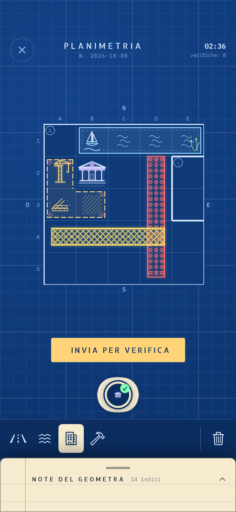
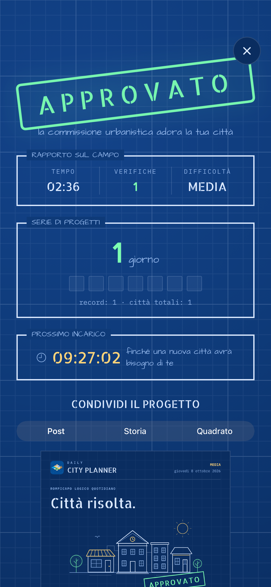
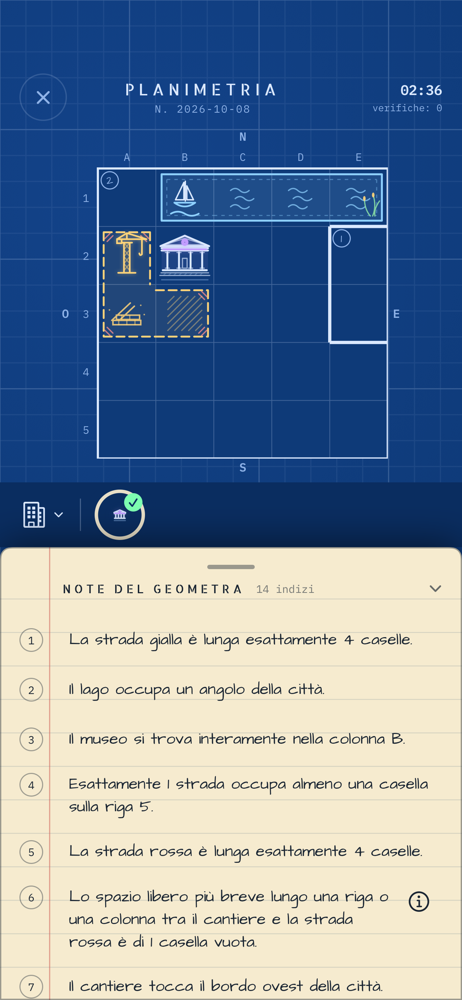

Una piccola città.
Ogni giorno nuova.
Leggi le note del geometra. Posiziona tutte le strade, i parchi e gli edifici. Trova l’unica città che rispetta tutti gli indizi.

Disponibile per iPhone e iPad.


Ogni indizio
trova il suo posto.
Leggi gli indizi
Segui gli indizi su strade, luoghi e quartieri.
Disegna la città
Scegli un pezzo, posizionalo e perfeziona il progetto.
Verifica il progetto
Scopri cosa funziona e cosa cambiare, poi prova di nuovo.

Un piccolo rito quotidiano di logica.
- Un nuovo rompicapo ogni giorno
- Progressi salvati sul tuo dispositivo
- Una formazione passo dopo passo
- Serie, risultati e rapporti da condividere